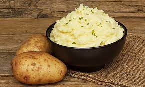

Non-Dairy Mashed Potatoes

Decription
This recipe is meant to be Whole30 complient yet moist and flavorful.
Spices and seasoning can vary depending on what the mashed potaoes are served with.
Ingredients
- 4 russet potaoes (or equivalent using red or white)
- Alternative milk product (recommend Almond)
- olive oil
- Optional: Chicken or Vegetable Broth
- 2 tsp of garlic powder
- 2 tbp of black pepper
- 1 Tbps of choice seasoning blend
- italian blend to taste
Steps
- Fill pot with water
- Quarter potatoes
- Boil water
- Once water is boiling carefully place potatoes in pot
- Turn down stove to prevent water from boiling over
- Boil potatoes for 20-30 minutes or until tender
- Strain potatoes
- Replace potatoes back into pot
- Add garlic, pepper, lemon seasoning, and italian blend to bowl
- Add milk, oil, and broth to desired consistancy